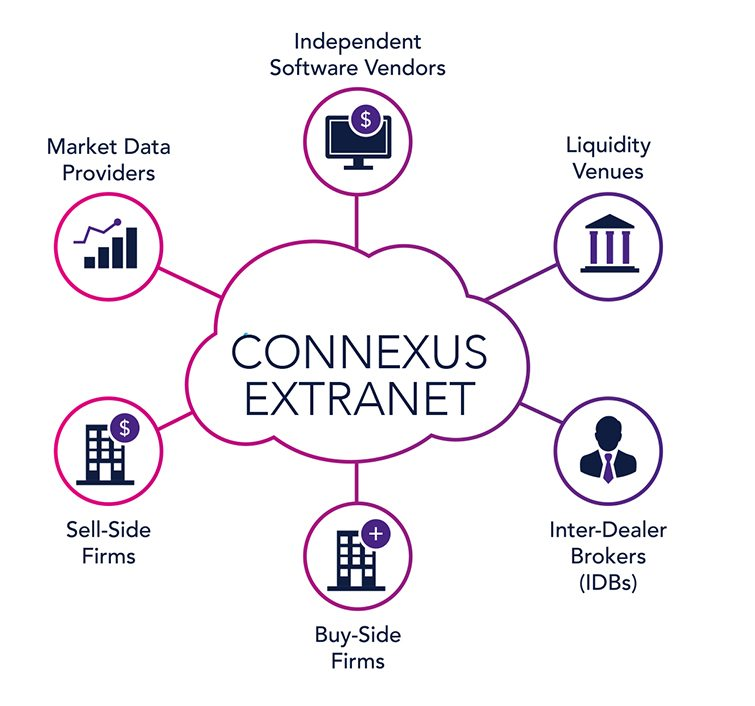

Internet

The Internet (portmanteau of interconnected network) is the global system of interconnected computer networks that use the Internet protocol suite (TCP/IP) to link devices worldwide. It is a network of networks that consists of private, public, academic, business, and government networks of local to global scope, linked by a broad array of electronic, wireless, and optical networking technologies. The Internet carries a vast range of information resources and services, such as the inter-linked hypertext documents and applications of the World Wide Web (WWW), electronic mail, telephony, and file sharing.
The origins of the Internet date back to research commissioned by the federal government of the United States in the 1960s to build robust, fault-tolerant communication with computer networks.[1] The primary precursor network, the ARPANET, initially served as a backbone for interconnection of regional academic and military networks in the 1980s. The funding of the National Science Foundation Network as a new backbone in the 1980s, as well as private funding for other commercial extensions, led to worldwide participation in the development of new networking technologies, and the merger of many networks.[2] The linking of commercial networks and enterprises by the early 1990s marked the beginning of the transition to the modern Internet,[3] and generated a sustained exponential growth as generations of institutional, personal, and mobile computers were connected to the network. Although the Internet was widely used by academia since the 1980s, commercialization incorporated its services and technologies into virtually every aspect of modern life.
Most traditional communication media, including telephony, radio, television, paper mail and newspapers are reshaped, redefined, or even bypassed by the Internet, giving birth to new services such as email, Internet telephony, Internet television, online music, digital newspapers, and video streaming websites. Newspaper, book, and other print publishing are adapting to website technology, or are reshaped into blogging, web feeds and online news aggregators. The Internet has enabled and accelerated new forms of personal interactions through instant messaging, Internet forums, and social networking. Online shopping has grown exponentially both for major retailers and small businesses and entrepreneurs, as it enables firms to extend their "brick and mortar" presence to serve a larger market or even sell goods and services entirely online. Business-to-business and financial services on the Internet affect supply chains across entire industries.
The Internet has no single centralized governance in either technological implementation or policies for access and usage; each constituent network sets its own policies.[4] The overreaching definitions of the two principal name spaces in the Internet, the Internet Protocol address (IP address) space and the Domain Name System (DNS), are directed by a maintainer organization, the Internet Corporation for Assigned Names and Numbers (ICANN). The technical underpinning and standardization of the core protocols is an activity of the Internet Engineering Task Force (IETF), a non-profit organization of loosely affiliated international participants that anyone may associate with by contributing technical expertise.[5] In November 2006, the Internet was included on USA Today's list of New Seven Wonders.[6]
Intranet
An intranet is a private network accessible only to an organization's staff.[1][2] Often, a wide range of information and services are available on an organization's internal intranet that are unavailable to the public, unlike the Internet. A company-wide intranet can constitute an important focal point of internal communication and collaboration, and provide a single starting point to access internal and external resources. In its simplest form, an intranet is established with the technologies for local area networks (LANs) and wide area networks (WANs).[3][4][5] Many modern intranets have search engines, user profiles, blogs, mobile apps with notifications, and events planning within their infrastructure.
Extranet
An extranet is a controlled private network that allows access to partners, vendors and suppliers or an authorized set of customers – normally to a subset of the information accessible from an organization's intranet. An extranet is similar to a DMZ in that it provides access to needed services for authorized parties, without granting access to an organization's entire network.